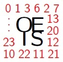

Hearing the OEIS
 What does a number sequence "sound like"?
Let's join MIDI-Perl with the OEIS module!
MIDI stands for "Musical Instrument Digital Interface." Perl is, of course a computer language. And the OEIS is the venerable, On-Line Encyclopedia of Integer Sequences.
Let's get to it. The code is super simple:
#!/usr/bin/env perl
use strict;
use warnings;
Declare the modules and functions to use:
use MIDI::Util qw(setup_score);
use Music::Scales qw(get_scale_MIDI);
use OEIS qw(oeis);
Declare and assign the program parameters (which can be given as command-line arguments):
my $oeis = shift || die "Usage: perl $0 oeis-number [how-many scale bpm patch octave]\n";
my $limit = shift || 64;
my $scale = shift || 'major';
my $bpm = shift || 300;
my $patch = shift || 0;
my $octave = shift || 4;
We will need a MIDI score and a scale of notes:
my $score = setup_score(bpm => $bpm, patch => $patch);
my @scale = get_scale_MIDI('C', $octave, $scale);
Inspect each term of the OEIS sequence. Find the modulo between this term and the size of the scale. (This keeps the values in the audible range.) Add this value as a note to the growing score:
my $i = 0;
for my $n (oeis($oeis, $limit)) {
my $mod = $n % @scale;
my $note = $scale[$mod];
printf "%d. n: %d, mod %d: %d, note: %d\n",
++$i, $n, scalar(@scale), $mod, $note;
$score->n('qn', $note);
}
Finally, write the score to a MIDI file, named after the program:
$score->write_score("$0.mid");
And what does this sound like? Well here are the 58 prime numbers in the sequence OEIS A000040:
And here are the first 64 Fibonacci numbers (OEIS A000045):
Woo!